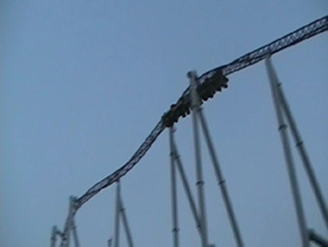
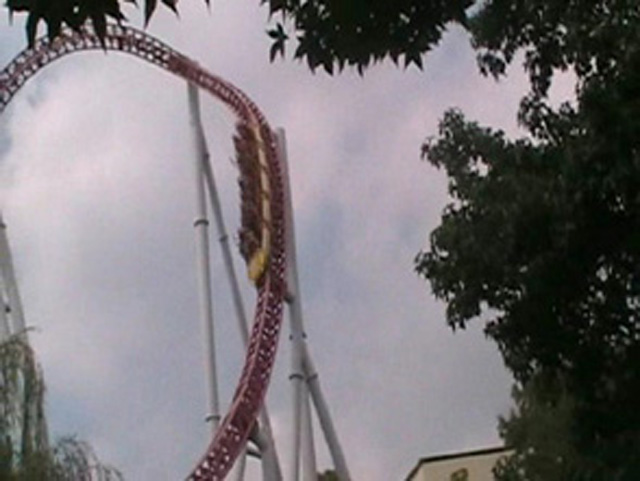
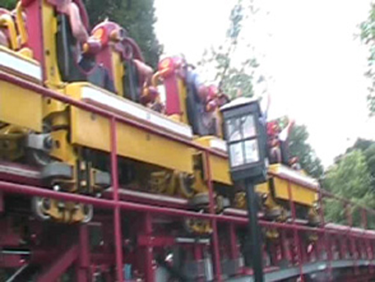
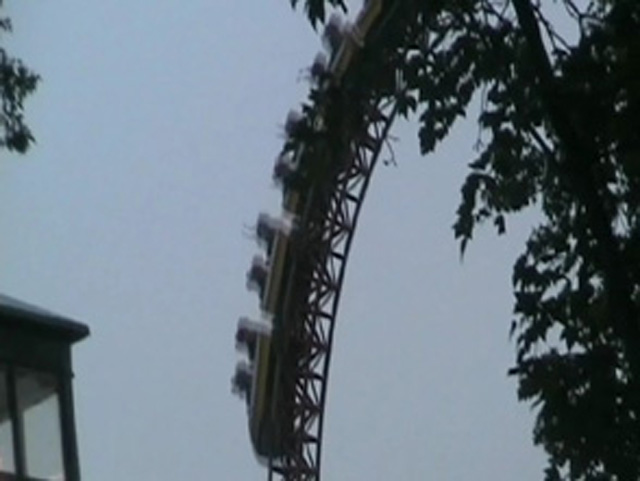
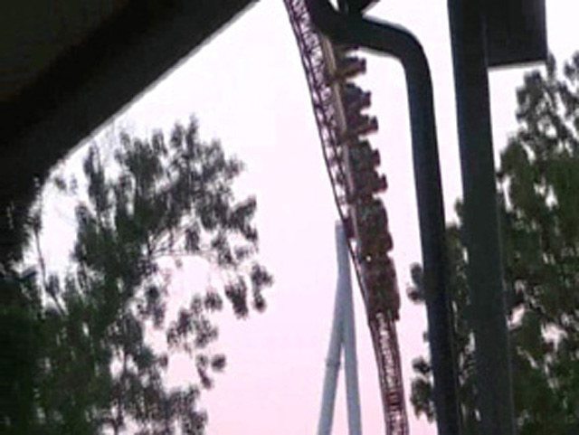
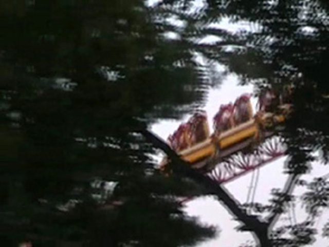
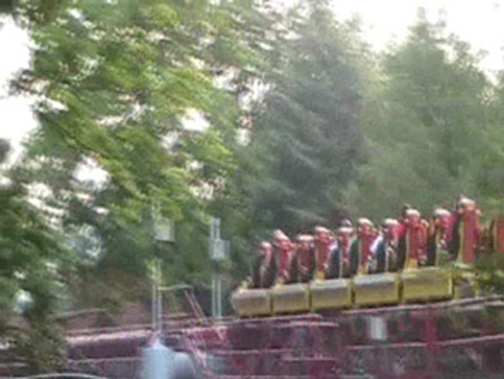
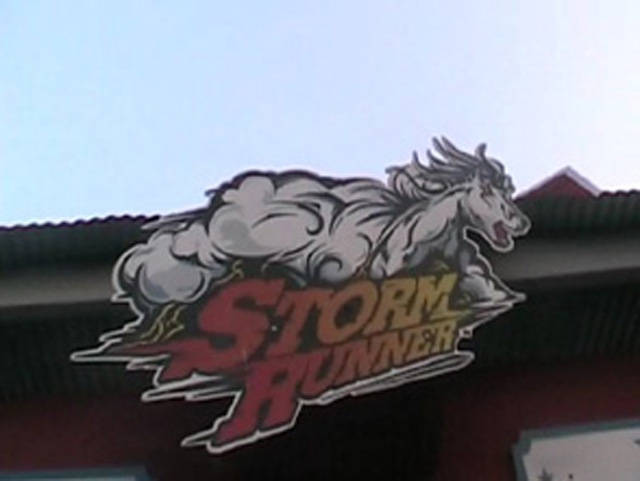

| |
Storm Runner Review

We're here at Hersheypark. After pulling down the OTSRs, we then roll out of the station and into the launching area. After just stopping there, we sit around and look at the people looking at us and the top hat. Then you hear a voice say "Now get ready. Here we go!" Right after we hear that, we launch. It's a pretty powerful launch and is definetly a lot of fun. Storm Runner also has the Top Thrill Dragster Effect, where it slows down a little before reaching the top hat. Then we twist up into the sky as we roar straight up the top hat. At the top of the top hat, we get a nice view of Hersheypark. But then we notice, something is not right here. Oh yeah. We never got airtime on the top hat (Or at least I didn't). Then again, I only rode Storm Runner in the middle of the train, so that might have something to do with it. But anyways, we then head down the 90 degree drop back down the top hat. The drop is definetly awesome, with or without airtime. After the top hat, we have got all our speed back and are flying again. We then soar up into the Immelmann. We rise up into our first inversion. While not too crazy, it's definetly a lot of fun. We then head out of the Immelmann and into the Flying Snake Dive. The Flying Snake Dive is by far the best part of the ride. You first rise up into a hill and get ejector air!!! While you are still in mid ejector air, you are thrown into an inline twist. That alone is amazing because of the fact that it's combinding two of my favorite elements together. And then you head into what feels like another inline twist. But before you know it, you're back on the ground and don't even know how you got there. Then you head into some twisty track. While not really amazing, it's still fun. And plus, it's really cool to look at. But unfortunetly, after that twisty bit, our ride is over. While it's a short ride, it's an extremely badass short ride. Even if there's no airtime on the top hat, Storm Runner is still an amazing ride. I'd definetly recommend riding this if at Hersheypark. The flying snake dive is worth it alone.
9/10
Location: Hersheypark
Opened: 2004
Built by: Intamin
Last Ridden: July 27, 2007
Storm Runner Photos








|